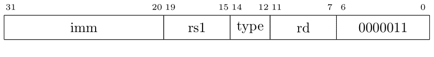
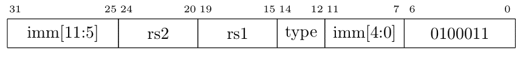

Carmi Merimovich
Personal Site
מכונות טען-אחסן
זכרון המחשב הוא רכיב פסיבי. הזכרון מקבל שתי פקודות. הוא יכול לקבל כתובת ופקודת קריאה, ואז יחזיר את תוכן הכתובת. או שהוא יכול לקבל כתובת ותוכן ואז הוא ישמור את התוכן בכתובת שניתנה לו. אנו רגילים לכתוב בשםת על פקודות המצורה הבאהL
x = y + z;
לא משנה מה סוג המעבד מה שחייב להתבצע שו=הוא הדבר הבא. המשתנים y ו-z יקראו מהזיכרון לאוגרים שנמצאים בתוך המעבד. המעבד יסכום את שני האוגרים ואת התוצאה ישים באוגר. המעבד יכתוב לזיכרות את אוגר התוצאה לכתובת בה נמצא המשתנה z.
יש מעבדים להם יש פקודות מכונה המאפשרות פעולות על תא בזיכרון.
לדוגמא x86 יש פקודה add x, r0
שמוסיפה את אוגר r0 ךתא בזיכרון שנמצא בכתובת x.
מעבד כזה מסתיר מאיתנו את העובדה שכתובת x נקראת לאוגר,
אז מתבצע החיבור עם r0,
ואז התוצאה תיכת לזיכרון בכתובת x.
מעבדי cisc מכילים בדרך-כלל פקודות רבות מסוג זה.
מעבדים נקראים מעבדי טען-אחסן (load-store processor) אם אין הסתרות כלעיל. יש פקודות שקוראות מהזיכרון לאוגר. יש פקודות שכותבות מזיכרון לאוגר. כל פקודות העיבוד מטפלות רק באוגרים. מכונות risc הן בדרך כלל מכונות טען-החסן. ו-rv64 בהחלט נכונת טען-החסן.
למעבד יש 7 פקודות קריאה מהזיכרון ו-4 פעולות כתיבה לזיכרון.
פקודות טעינה עבור נתונים עם סימן:
lb rd,off(rs) // rd ← sext(byte mem[sext(off) + rs]) 1 byte
lh rd,off(rs) // rd ← sext(halfword mem[sext(off) + rs]) 2 bytes
lw rd,off(rs) // rd ← sext(word mem[sext(off) + rs]) 4 bytes4 bytes
ld rd,off(rs) // rd ← doubleword mem[sext(off) + rs] 8 bytes
פקודות טעינה עבור נתונים ללא סימן:
lbu rd,off(rs) // rd ← zext(byte mem[sext(off) + rs]) 1 byte
lhu rd,off(rs) // rd ← zext(halfword mem[sext(off) + rs]) 2 bytes
lwu rd,off(rs) // rd ← zext(word mem[sext(off) + rs]) 4 bytes4 bytes
מבנה פקודות המכונה הוא כלהלן: 
| mnemonic | type |
| lb | 0 | | lh | 1 | | lw | 2 | | ld | 3 | | lbu | 4 | | lhu | 5 | | lwu | 6 |
פקודות האיחסון הם כלהלן.
sb rd,off(rs) // byte mem[sext(off) + rs]) ← rd 1 byte
sh rd,off(rs) // halfword mem[sext(off) + rs] ← rd 2 bytes
sw rd,off(rs) // word mem[sext(off) + rs] ← rd 4 bytes4 bytes
sd rd,off(rs) // doubleword mem[sext(off) + rs] ← rd 8 bytes
מבנה פקודות המכונה הוא כלהלן: 
| mnemonic | type |
| sb | 0 | | sh | 1 | | sw | 2 | | sd | 3 |
שימו לב שיש דרך אחת ויחידה לציין כתובת בזיכרון. הכתובת היא הסכום של תוכן אוגר ביחד עם קבוע בטווח 2048- עד 2047. שיטה שבה נוצרת כתובת בזיכרון נקראת שיטת מיעון, addressing mode. וב-rv64 יש שיטת מיון אחת ויחידה. זה די מדהים בהתחשב בכך שיש מעבדים עם מספר דו-ספרתי של שיטומ מיעון.
השמות
rv64 הוא מעבד בו האוגרים ברוחב 64 ביטים. באופן פורמלי מילת המעבד היא ברוחב 64 ביטים. אבל אנחנו רואים שליחידה בגודל 64 ביטים קוראים doubleword. ובכן, זה מה שקורה כשיש הסטוריה. המעבד הראשון במשפחה זו הוא ה-rv32. האוגרים במעבד זה ברוחב 32 ביטים ויחידה בגודל 32 ביטים נקראת word. כדי להשאר תאימות לאחור כאשר תוכנן המעבד rv64 נשארה המילה word כדי לתאר יחידה ברוחב 32 ביטים.
במשפחת מעבדי x86 word מציין יחידה ברוחב 16 ביטים כיון שרוחב האוגרים במעבד הראשון במשפחה ה-8086 היה 16 ביטים.